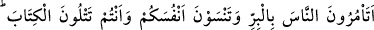
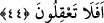

Ağzı bağlı su kabı, suyun içine batmaz.
İçi aşk havası ile dolu gönül, suyun üstünde gider.
Çünkü dervişlik rüzgârı bâtında olur,
Bu yüzden de cihân suyunun üstünde durur, batırmaz.
et-Te’vîlâtü’n-Necmiyye’de yukarıda zikrettiğimiz âyete şu mânâlar verilmiştir:
“Namaz kılınız”, emrinden maksad, namazı kalbi kontrol altında tutarak huşû ve hudû
içinde kılmaktır. Zekât vermek ise; nefsi dünyâ hırsından, kötü ahlâktan kalbi de kötü
düşüncelerden temizlemek demektir. Zekât; mâsivâyı istemekten vazgeçmektir. Allah’ı
istemenin yanında mâsivâyı istemek fazlalıktır. Çünkü kemâl üzerine ziyâde bir şey
istemek noksanlıktır. Rükû edenlerle rükû etmek ise, mevcûd olana ulaşmak için,
vücûdlarını fedâ eden kalbi kırık kimselere uymakla olur.
44. (Ey bilginler!) Sizler Kitab’ı (Tevrât’ı) okuduğunuz (gerçekleri bildiğiniz)
halde, insanlara iyiliği emredip kendinizi unutuyor musunuz? Aklınızı kullanmıyor
musunuz?
Hıtâb yine yahûdîleredir. “Emir”; insanın kendinden aşağı birisine: “Şunu yap”
demesidir. Âyetteki “Nâs” yâni insanlar ise yahûdîlerin ayak takımıdır. “Birr (iyilik)”
ise Hz. Muhammed’in peygamberliğini i’tirâf etmek, O’nun getirdiği delillere uymaktır.
Hayırda geniş olmak anlamınadır. Geniş boşluk mânâsına gelen “berr” kelimesinden
alınmıştır. “Birr” insanın hayırda elini açmasıdır. Soru hemzesi, onları azarlamak ve
hayret ifâde etmek için getirilmiştir. Zira onlar başkalarına emrettiklerini, kendilerine
emretmeyi unutan kimseler gibidir.
Unutmak anlamına gelen “sehv” ve “nisyân”ın temelinde terketmek anlamı vardır.
Ancak “sehv”, insanın bildiği veya bilmediği bir şeyi terketmesidir. “Nisyân” ise
insanın aklında olan bir şeyin kendiliğinden kaybolmasıdır.
Yahûdî
âlimleri,
kendilerinden
beklentileri
olmayan
fakirlerine
gizlice:
“Muhammed’e inanın. O Allah’ın rasûlüdür.” diyorlardı. Zenginlerine ise: “Biz onda
âhır-zaman peygamberinin bir kısım alâmetlerini görüyoruz. Diğer alâmetleri
göremiyoruz” diyerek onlardan yararlanmaya devam ediyorlardı. Kendileri ise ona
ileride îmân etmeyi düşünüyorlar; hemen îmân etmiyorlardı. Bunun gibi, günahlara
dalan kimseler de yaşlanınca “tevbe ederiz, sâlih insan oluruz” derler. Ama ölüm, bir
gün ânîden gelir çatar ve insan umduğuna eremeden ölür gider. Hâfız der ki:
Gördün mü ey Hâfız, kekliğin salınarak yürüyüşünü,
Kendisini kazâ şâhininin pençesinden gâfil kıldı.